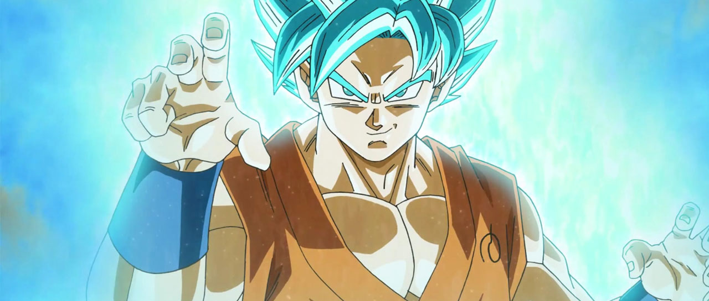

kaioken

Supersaiyan

Supersaiyan azul

Cada 9 de mayo se celebra el día de Goku en Japón, se debe a que en Japón el mes de mayo que es el número 5 se lee 'Go' y el día 9 se lee como 'Kyü' (se pronuncia Ku) y es tal la importancia y el calado que ha tenido este personaje en el mundo, que se podría decir que la celebración se extiende en todo el globo. Cualquier persona que no le guste Dragon Ball o no esté familiarizada con el manga de Akira Toriyama sabe quien es Goku, se ha convertido en una referencia mundial y es por ello que en Areajugones vamos a realizar un especial sobre él.